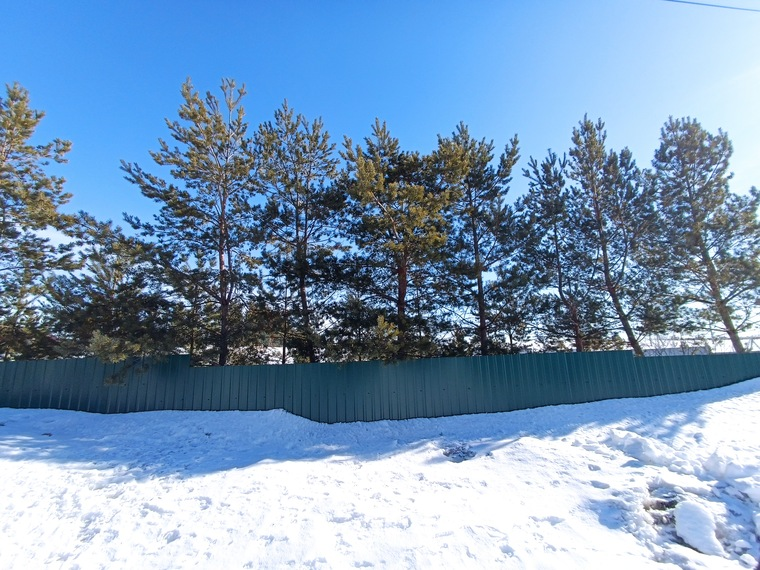

Обзор смартфона POCO M4 Pro 4G на 6/128 ГБ в чёрном цвете
Смартфон POCO M4 Pro 4G является новинкой 2022 года. Он был представлен 28 февраля и со 2 марта начались его продажи в России. Название для новинки выбрано так, что его легко спутать с версией 5G, но это совсем другой аппарат. Посмотрим, что из себя представляет данный телефон, который является моим вторым смартфоном и используется в качестве рабочего.
Данный телефон достаточно сильно отличается от предшественника, который имеет поддержку 5G, а этот нет. А также в данном телефоне установлен AMOLED дисплей меньшей диагонали, имеет другой процессор и размер, другой набор камер. В общем это совсем другой телефон со следующими основными характеристиками.
| Дисплей | 6,43", AMOLED, 2400х1080 точек, 90 Гц |
| Процессор | MediaTek Helio G96 (восьмиядерный ЦП с тактовой частотой до 2,05 ГГц). Графический процессор: Mali-G57 MC2 |
| Аккумулятор и зарядка | Аккумулятор 5000 мАч. Быстрая зарядка 33 Вт |
| Камеры | Основная — 64 Мп (f/1.8) + 8 Мп (широкоугольная, 118°, f/2.2) + 2 Мп (макро, f/2.4), фронтальная — 16 Мп (f/2.5) |
| Память и ОЗУ | 6 ГБ LPDDR4X и 128 ГБ UFS 2.2 |
| Сеть и возможности подключения | Поддержка 4G/3G/2G. Bluetooth 5.0. Протокол Wi-Fi: 802.11a/b/g/n/ac |
| Навигация и определение местоположения | GPS: L1ГЛОНАСС: G1 | Galileo: E1 | Beidou: B1 |
| Операционная система | MIUI 13 для POCO, на базе Android 11 |
| Аккумулятор | 5000 мАч |
| Особенности | Боковой сканер отпечатков на кнопке включения, ИК-порт, NFC, быстрая зарядка, стереодинамики, слот для карты памяти, IP53, аудиоразъём 3,5 мм. |
Упаковка и комплектация
В коробке нас ожидает богатая комплектация и помимо POCO M4 Pro внутри находится:

Здесь лежит полноценная зарядка на 33 Вт, которая позволяет зарядить устройство до 100% за один час по заверениям производителя. Но я проверил, и действительно, смартфон зарядился ровно за час минута в минуту.
Зарядка имеет белую расцветку с цветными элементами. Обозреваемый же смартфон имеет чёрный цвет (официально - заряженный чёрный), но также имеются ещё две расцветки: холодный синий и жёлтый РОСО.
Внешний вид
Спереди смартфон ничем не отличается от других, где почти всю лицевую часть занимает дисплей. Под фронтальную камеру 16 Мп на экране имеется вырез, а сверху над ней видна сетка динамика. Кнопка включения и качелька управления громкости находится на правой грани, что для меня удобно и привычно. Кнопка включения совмещена со сканером отпечатков пальцев, что ещё удобнее. До этого у меня были смартфоны только со сканерами, расположенные на задней крышке. Подэкранного сканера отпечатка пальца сюда не завезли.
Сверху есть забытый многими производителями разъём для наушников, а ещё имеется ИК-излучатель, который также есть не во многих смартфонах. M4 Pro оснащен двумя динамиками, второй как раз располагается сверху.

Снизу у смартфона расположены микрофон, разъём для зарядки Type-C и первый динамик.

Сзади выделяется приподнятый над корпусом блок камер, который раздули по всей ширине корпуса.

С одной стороны это симметрично, поэтому смотрится более красиво и гармонично, но с другой стороны - большая зона для повреждения, т.к. комплектный чехол имеет прорезь под этот выступ, но правда и имеет небольшой бортик около миллиметра.
На левой грани, которые, кстати плоские, имеется лоток для двух SIM карт и отдельное место для памяти расширения! Я давно не встречал смартфоны, где сохранили такую возможность, сейчас поголовно идут совмещённые лотки и людям приходится делать "бутерброды". В комплекте также есть скрепка для извлечения тройного лотка (а не как Apple, которые стали продавать сей продукт за 4 доллара США).

При этом смартфон тонкий 8 мм и достаточно лёгкий 180 грамм. После моего основного Mi Mix 2s, который весит за 200 грамм этот ощущается легко. Чёрный цвет смотрится строго, солидно и сильно не переливается.
Приложения, оболочка, тесты
Сразу после подключения смартфона к сети он нашёл обновление, что желательно и сразу сделать (лучше с последующим сбросом всех настроек) и потом уже настраивать новый девайс под себя. В телефоне стоит MIUI 13 на Android 11.

Производительность

Камеры
В смартфоне установлены 4 камеры:
Обычная vs Широкоугольная

По умолчанию камера снимает на основной объектив 16 Мп и разрешение imgграфий получается 4624 х 3472 пикселей.
Пример записи видео с настройками по умолчанию 1920*1080 30 к/с:
Официальная цена для новинки в 25000 рублей завышена минимум на 10 тысяч. Здесь нет ненужного 5G, зато есть полезные 2 разъёма для SIM-карты, отдельный слот для карт памяти microSD, есть разъём для наушников 3,5 мм, есть радио, ИК-пульт, NFC. Отдельно стоит отличный amoled дисплей яркими насыщенными цветами, 90 Гц. Wi-Fi, Bluetooth - всё работает отлично. К качеству связи нареканий нет. Есть запись звонков.